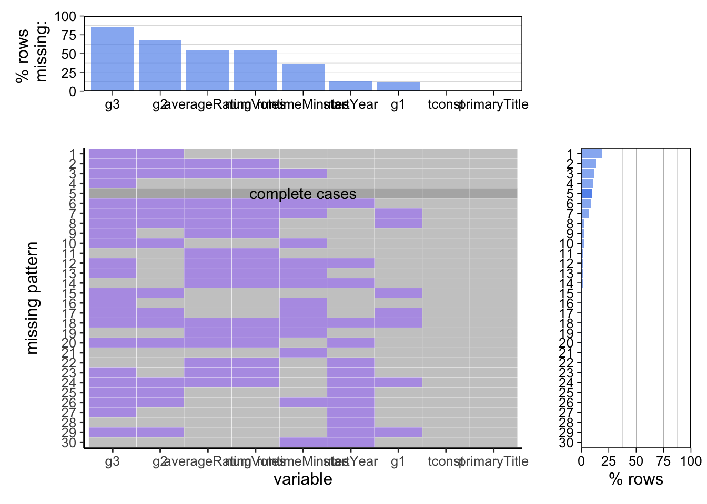
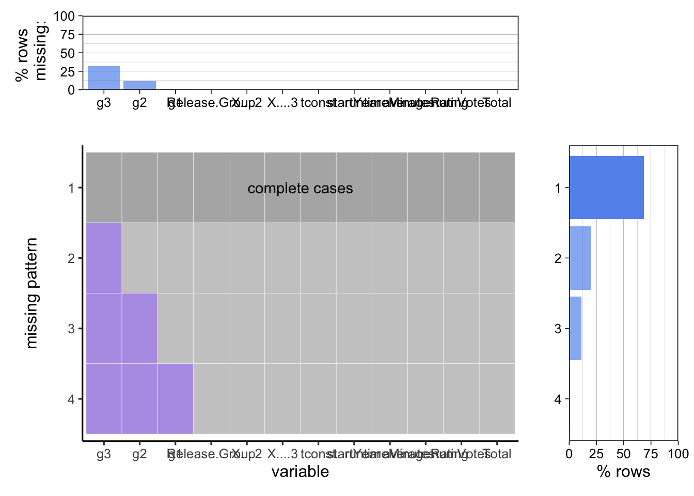

Chapter 4 Missing values
4.1 Missing values for movie basic data(titlename, runtime, genres and rating)
library(tidyverse)
library(redav)imdb_movie<-read_csv("data/imdb_movie.csv")
plot_missing(imdb_movie)
plot_missing(imdb_movie[,3:9])
Describe the graphs:
From the plot of missing values, we can see if we plot the entire data set, we cannot see the names of the variables below the graph, so we take a subset of the data set, which keeps all missing values. It turns out we have about half the complete data. More than 80% of data missing occurs in the three variables of g3 which is the variable separate from genres since the IMDB system will not force each film to have 3 labels of genres. It is reasonable that most movies only have 1 or 2 labels of genres. THat means more than 80% films only have Number of Votes and Runtime. At the same time, we also found some patterns between different types of variables: Average Rating and Number of Votes will be missing at the same time and the number of missing is almost the same, which may be caused by some force majeure factors in the data statistics process, for example, a certain film has not publicly released voting and scoring channels.